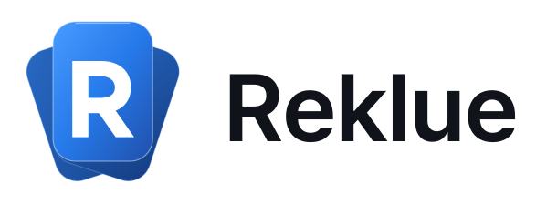
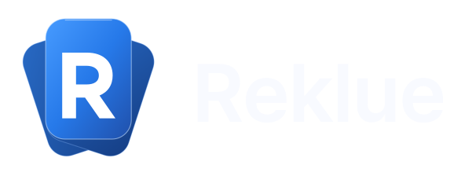
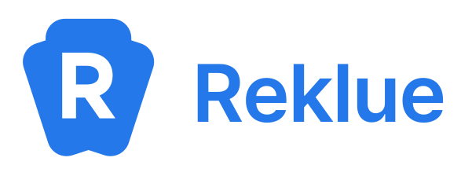
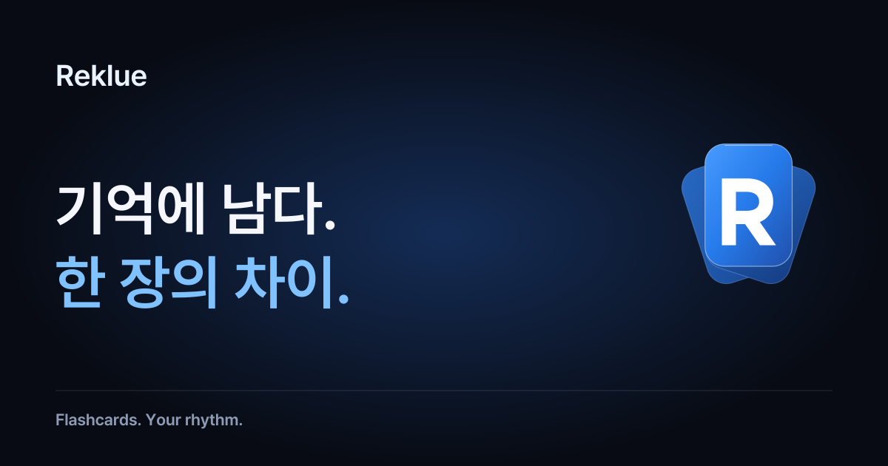

REKLUE / BRAND ASSETS한 장에 담은 리클루.
겹쳐진 카드와 또렷한 R. 크기와 배경에 맞춰 사용할 수 있는 리클루의 새 로고입니다.
SVG 원본, 투명 PNG, 가로·세로 조합, 한글형과 공유 이미지를 함께 제공합니다.
브랜드 키트 전체 다운로드 ↗ · Reklue ↗함께 쓰는 이름.

Horizontal · dark
SVG ↗
Horizontal · light
SVG ↗
Horizontal · blue
SVG ↗
Clear space · 앞 카드 너비의 ¼ 이상 여백을 유지하세요. 작은 크기에는 Micro 버전을 권장합니다.
Blue #2478EA · Ink #10131A · Paper #F8FAFF